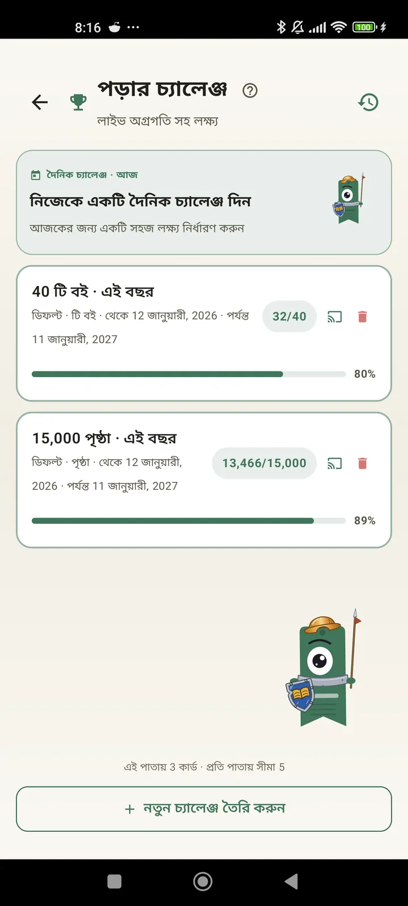

পাঠক হিসেবে নিজেকে জানুন
চ্যালেঞ্জ, Bingo, উইজেট আর আরও অনেক ফিচার, যাতে পড়া থেকে সবটুকু পান। 3.7-এ নতুন: চ্যালেঞ্জ আর Bingo উইজেট।

পড়ার চ্যালেঞ্জ
পৃষ্ঠা, স্ট্রিক বা ধরণ অনুযায়ী লক্ষ্য ঠিক করুন। ফ্রিতে একসাথে ১৫টি পর্যন্ত সক্রিয় চ্যালেঞ্জ, Pro-তে সীমাহীন। সাথে একটি কাস্টমাইজযোগ্য দৈনিক চ্যালেঞ্জ, যা সীমার মধ্যে গোনা হয় না।

দৈনিক চ্যালেঞ্জ
প্রতিদিন নতুন লক্ষ্য। স্ট্রিক ধরে রাখতে মাঝরাতের আগে চ্যালেঞ্জটা শেষ করুন।

পড়ার Bingo
প্রতি মাসে থিমভিত্তিক ঘরসহ দুটি নতুন Bingo। সারি, কলাম বা পুরো কার্ড পূরণ করুন।

সাপ্তাহিক সারসংক্ষেপ
প্রতি সোমবার আপনার সপ্তাহের এক ঝলক: পড়া পৃষ্ঠা, মোট সময়, স্ট্রিক, আর আগের সপ্তাহের তুলনায় কেমন গেল।

মাসিক সারসংক্ষেপ
মাস শেষ হলে Lecturameter সেটার সারসংক্ষেপ দেয়: পৃষ্ঠা, সময়, শেষ করা বই, দিনে দিনে আপনার গতি আর মাসের সেরা বই।

Bingo উইজেট Pro
এই মাসের Bingo কার্ড, সবসময় চোখের সামনে, আপনার পূরণ করা ঘর আর বানানো লাইনসহ।

বই উইজেট ফ্রি
যে বইটা পড়ছেন সেটা সরাসরি হোম স্ক্রিনে দেখুন: প্রচ্ছদ, শিরোনাম, লেখক, পৃষ্ঠা আর অগ্রগতির শতাংশ, সবসময় হালনাগাদ। যেখানে খুশি বসাতে আকার বদলানো যায়।
সত্যি বলছি ভাই, অ্যাপটা থেরাপির মতো। দিনে দু-এক পৃষ্ঠা থেকে এখন দিনে প্রায় ২০ পৃষ্ঠা পড়ি, আর আরও উন্নতি হচ্ছেএকজন ব্যবহারকারীর মতামত, ইমেইলে পাঠানো

মাসিক তুলনা Pro
অ্যাপ না খুলেই সাম্প্রতিক মাসগুলোয় এক ঝলক। প্রতি মাসের পৃষ্ঠার বার, চলতি মাসটা হাইলাইট করা, যাতে এক নজরে বুঝতে পারেন গত মাসের চেয়ে এ মাসে ভালো না খারাপ করছেন।

চ্যালেঞ্জ উইজেট Pro
হোম স্ক্রিনে আপনার সক্রিয় চ্যালেঞ্জ আর তাদের অগ্রগতি। কোনগুলো দেখাবে তা চ্যালেঞ্জসমূহ স্ক্রিন থেকে বেছে নিন।